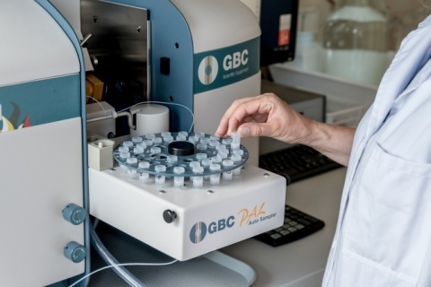
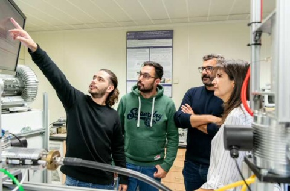
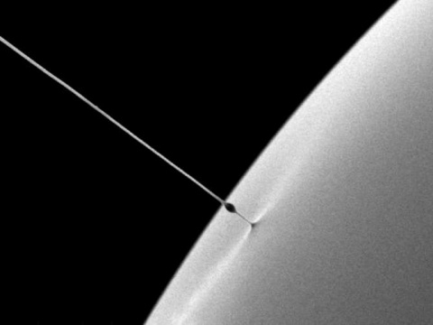

Las NanoNoticias
Purificación del Aire
La nanotecnología es una ciencia emergente que ha revolucionado la forma en que se estudian y fabrican los materiales. Los nanomateriales tienen propiedades únicas que los hacen diferentes de los materiales a escala macroscópica.
La nanotecnología tiene aplicaciones en una amplia variedad de campos, incluyendo la medicina, la electrónica, la energía y el medio ambiente.

Aplicacion de la Nanotecnología en Medicinas
La nanotecnología tiene el potencial de revolucionar la medicina al permitir la entrega de fármacos más eficiente y específica, la detección temprana de enfermedades y la regeneración de tejidos.
Generar Nanoparticulas
La nanotecnología está permitiendo el desarrollo de dispositivos electrónicos más pequeños, rápidos y eficientes, como los transistores y los sensores.
Modificar la Superficie de Nanoparticulas
La nanotecnología puede ayudar a mejorar la eficiencia de las células solares y los sistemas de almacenamiento de energía, lo que podría tener un gran impacto en la lucha contra el cambio climático.
Transporte de liquidos
La nanotecnología puede ayudar a limpiar el agua y el aire, y a detectar y eliminar los contaminantes.
